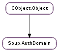

| Subclasses: | Soup.AuthDomainBasic, Soup.AuthDomainDigest |
|---|
| accepts(msg) | |
| add_path(path) | |
| basic_set_auth_callback(callback, *user_data) | |
| challenge(msg) | |
| check_password(msg, username, password) | |
| covers(msg) | |
| digest_set_auth_callback(callback, *user_data) | |
| get_realm() | |
| remove_path(path) | |
| set_filter(filter, *filter_data) | |
| set_generic_auth_callback(auth_callback, *auth_data) | |
| try_generic_auth_callback(msg, username) |
| Name | Type | Flags | Description |
|---|---|---|---|
| add-path | str | w | Add a path covered by this auth domain |
| filter | int | r/w | A filter for deciding whether or not to require authentication |
| filter-data | int | r/w | Data to pass to filter |
| generic-auth-callback | int | r/w | An authentication callback that can be used with any Soup.AuthDomain subclass |
| generic-auth-data | int | r/w | Data to pass to auth callback |
| proxy | bool | r/w/c | Whether or not this is a proxy auth domain |
| realm | str | r/w/c | The realm of this auth domain |
| remove-path | str | w | Remove a path covered by this auth domain |
None
| Name | Type | Access |
|---|---|---|
| parent | GObject.Object | r |
Bases: GObject.Object
| Parameters: | msg (Soup.Message) – a Soup.Message |
|---|---|
| Returns: | the username that msg has authenticated as, if in fact it has authenticated. None otherwise. |
| Return type: | str |
Checks if msg contains appropriate authorization for domain to accept it. Mirroring Soup.AuthDomain.covers (), this does not check whether or not domain cares if msg is authorized.
This is used by Soup.Server internally and is probably of no use to anyone else.
| Parameters: | path (str) – the path to add to domain |
|---|
Adds path to domain, such that requests under path on domain ‘s server will require authentication (unless overridden by Soup.AuthDomain.remove_path () or Soup.AuthDomain.set_filter ()).
You can also add paths by setting the Soup.AUTH_DOMAIN_ADD_PATH property, which can also be used to add one or more paths at construct time.
| Parameters: |
|
|---|
Sets the callback that domain will use to authenticate incoming requests. For each request containing authorization, domain will invoke the callback, and then either accept or reject the request based on callback ‘s return value.
You can also set the auth callback by setting the Soup.AUTH_DOMAIN_BASIC_AUTH_CALLBACK and Soup.AUTH_DOMAIN_BASIC_AUTH_DATA properties, which can also be used to set the callback at construct time.
| Parameters: | msg (Soup.Message) – a Soup.Message |
|---|
Adds a “WWW-Authenticate” or “Proxy-Authenticate” header to msg, requesting that the client authenticate, and sets msg ‘s status accordingly.
This is used by Soup.Server internally and is probably of no use to anyone else.
| Parameters: |
|
|---|---|
| Returns: | whether or not the message is authenticated |
| Return type: |
Checks if msg authenticates to domain via username and password. This would normally be called from a Soup.AuthDomainGenericAuthCallback.
| Parameters: | msg (Soup.Message) – a Soup.Message |
|---|---|
| Returns: | True if domain requires msg to be authenticated |
| Return type: | bool |
Checks if domain requires msg to be authenticated (according to its paths and filter function). This does not actually look at whether msg is authenticated, merely whether or not it needs to be.
This is used by Soup.Server internally and is probably of no use to anyone else.
| Parameters: |
|
|---|
Sets the callback that domain will use to authenticate incoming requests. For each request containing authorization, domain will invoke the callback, and then either accept or reject the request based on callback ‘s return value.
You can also set the auth callback by setting the Soup.AUTH_DOMAIN_DIGEST_AUTH_CALLBACK and Soup.AUTH_DOMAIN_DIGEST_AUTH_DATA properties, which can also be used to set the callback at construct time.
| Parameters: | path (str) – the path to remove from domain |
|---|
Removes path from domain, such that requests under path on domain ‘s server will NOT require authentication.
This is not simply an undo-er for Soup.AuthDomain.add_path (); it can be used to “carve out” a subtree that does not require authentication inside a hierarchy that does. Note also that unlike with Soup.AuthDomain.add_path (), this cannot be overridden by adding a filter, as filters can only bypass authentication that would otherwise be required, not require it where it would otherwise be unnecessary.
You can also remove paths by setting the Soup.AUTH_DOMAIN_REMOVE_PATH property, which can also be used to remove one or more paths at construct time.
| Parameters: |
|
|---|
Adds filter as an authentication filter to domain. The filter gets a chance to bypass authentication for certain requests that would otherwise require it. Eg, it might check the message’s path in some way that is too complicated to do via the other methods, or it might check the message’s method, and allow GETs but not PUTs.
The filter function returns True if the request should still require authentication, or False if authentication is unnecessary for this request.
To help prevent security holes, your filter should return True by default, and only return False under specifically-tested circumstances, rather than the other way around. Eg, in the example above, where you want to authenticate PUTs but not GETs, you should check if the method is GET and return False in that case, and then return True for all other methods (rather than returning True for PUT and False for all other methods). This way if it turned out (now or later) that some paths supported additional methods besides GET and PUT, those methods would default to being NOT allowed for unauthenticated users.
You can also set the filter by setting the Soup.AUTH_DOMAIN_FILTER and Soup.AUTH_DOMAIN_FILTER_DATA properties, which can also be used to set the filter at construct time.
| Parameters: |
|
|---|
Sets auth_callback as an authentication-handling callback for domain. Whenever a request comes in to domain which cannot be authenticated via a domain-specific auth callback (eg, Soup.AuthDomainDigestAuthCallback ), the generic auth callback will be invoked. See Soup.AuthDomainGenericAuthCallback for information on what the callback should do.
| Parameters: |
|
|---|---|
| Return type: |